(06) iP-VAE debug, etc.#
project = iP-VAE, host = mach, device = cuda:1
Motivation:
First round of coding/debugging.
Show code cell source
# HIDE CODE
import os, sys
from IPython.display import display
# tmp & extras dir
git_dir = os.path.join(os.environ['HOME'], 'Dropbox/git')
extras_dir = os.path.join(git_dir, 'jb-progress-2025/_extras')
fig_base_dir = os.path.join(git_dir, 'jb-progress-2025/figs')
tmp_dir = os.path.join(git_dir, 'jb-progress-2025/tmp')
# GitHub
sys.path.insert(0, os.path.join(git_dir, '_IterativeVAE'))
# from analysis.eval import sparse_score
from figures.fighelper import *
from main.train import *
# warnings, tqdm, & style
warnings.filterwarnings('ignore', category=DeprecationWarning)
warnings.filterwarnings('ignore', category=FutureWarning)
warnings.filterwarnings('ignore', category=UserWarning)
from rich.jupyter import print
%matplotlib inline
set_style()
from figures.analysis import plot_convergence
from figures.imgs import plot_weights
device_idx = 1
device = f'cuda:{device_idx}'
print(f"device: {device} ——— host: {os.uname().nodename}")
device: cuda:1 ——— host: mach
cm = 'bias-local_lr-global'
model_name = 'poisson_vH16_t-10×1_b-1_z-[512]_<grad|lin>'
fit_name = 'b200-ep300-lr(0.002)_beta(12:0x0.1)_temp(0.05:lin-0.5)_gr(200)_(2025_02_09,18:32)'
s = f"{model_name}/{cm}_{fit_name}"
tr, meta = load_model(s, lite=False, device=device)
kws = dict(
seq_total=10000,
seq_batch_sz=1000,
n_data_batches=10,
)
results = tr.analysis('vld', **kws)
_ = plot_convergence(results, color='k')
100%|█████████████████████████████████| 10/10 [04:56<00:00, 29.62s/it]
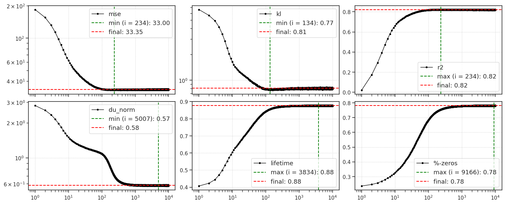
u0 = tonp(tr.model.layer.u_init.squeeze().exp())
bias = tonp(tr.model.layer.log_bias.squeeze().exp())
tr.model.show(order=np.argsort(u0));
tr.model.show(order=np.argsort(bias));
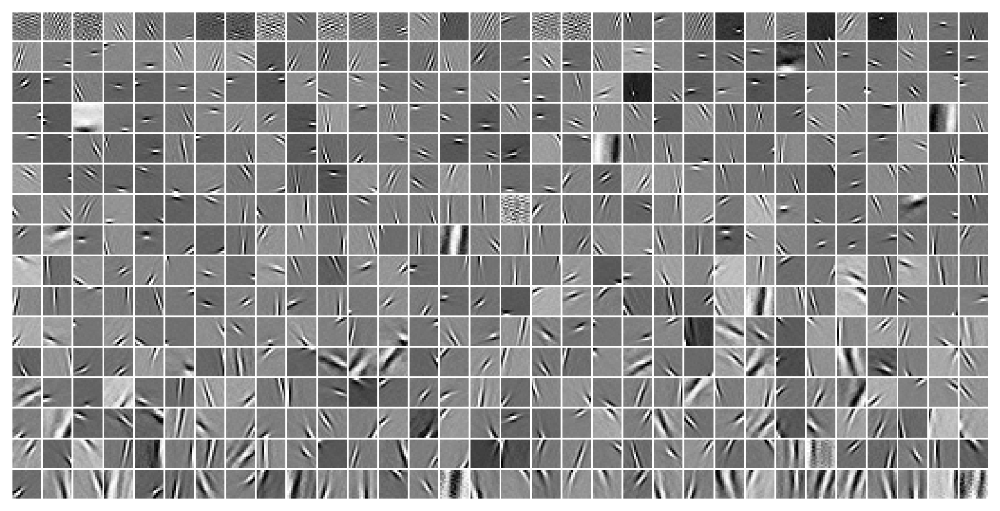
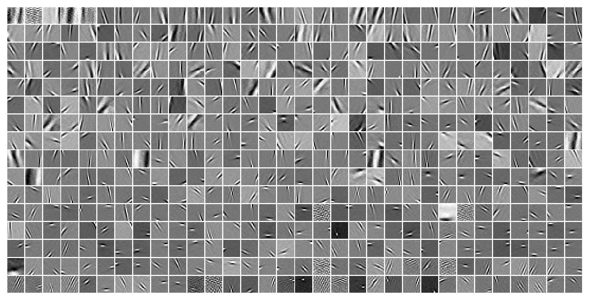
sp_stats.pearsonr(u0, bias)
PearsonRResult(statistic=-0.8827145148681286, pvalue=2.1340781180023318e-169)
print(vars(tr.model.cfg))
{ 'prior_log_dist': 'uniform', 'clamp_prior': -4, 'seq_len': 10, 'n_iters': 1, 'beta_inner': 1.0, 'n_latents': [512], 'inf_type': 'grad', 'dec_type': 'lin', 'dataset': 'vH16', 'feeder': 'stationary', 'feeder_cfg': {}, 'input_sz': (1, 16, 16), 'shape': (-1, 1, 16, 16), 'clamp_u': 8.0, 'clamp_du': 10.0, 'init_dist': 'normal', 'init_scale': 0.01, 'activation_fn': 'swish', 'fit_prior': True, 'stochastic': True, 'track_stats': True, 'seed': 0, 'base_dir': '/home/hadi/Projects/PoissonVAE', 'data_dir': '/home/hadi/Datasets', 'runs_dir': '/home/hadi/Projects/PoissonVAE/runs/poisson_vH16_t-10_z-[512]_<grad|lin>', 'mods_dir': '/home/hadi/Projects/PoissonVAE/models/poisson_vH16_t-10_z-[512]_<grad|lin>', 'results_dir': '/home/hadi/Projects/PoissonVAE/results' }
print(tr.model.cfg.name())
poisson_vH16_t-10_z-[512]_<grad|lin>
"""kws = dict(
seq_total=10000,
seq_batch_sz=1000,
n_data_batches=10,
)
results = tr.analysis('vld', **kws)
_ = plot_convergence(results, color='k')"""
100%|█████████████████████████████████| 10/10 [04:46<00:00, 28.67s/it]
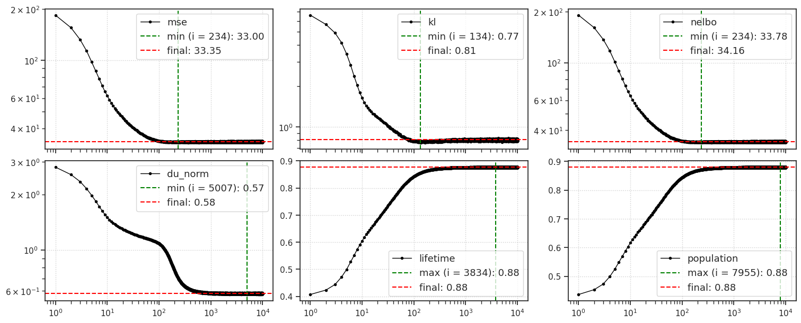
Continuous Poisson?#
from main.distributions import Poisson
bin_width = 0.01
num = 1100
z_start = bin_width / 2
z_end = z_start + num * bin_width
zs = torch.linspace(z_start, z_end, num + 1)
lam = torch.tensor([3.5])
pois_continuous = zs.pow(lam.item()) * torch.exp(-lam) / torch.exp(torch.lgamma(zs + 1))
pois_continuous /= torch.sum(pois_continuous)
pois_continuous /= bin_width
pois = Poisson(log_rate=torch.log(lam), temp=0.0)
samples = []
for _ in range(10000):
z = pois.rsample()
samples.append(z.item())
fig, ax = create_figure()
ax.plot(tonp(zs), tonp(pois_continuous), color='k')
sns.histplot(samples, ax=ax, stat='density')
plt.show()
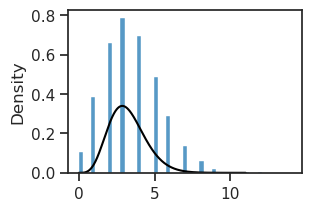
fig, ax = create_figure()
ax.plot(tonp(zs), tonp(pois_continuous), color='k')
sns.histplot(samples, ax=ax, stat='density', bins=np.linspace(0, 12, 13) - 0.5)
plt.show()
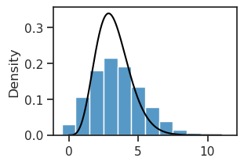
log_rate = nn.Parameter(torch.tensor(
np.linspace(-1, 4, 100),
))
dz_dr_all = {}
for temp in [0.01, 0.1, 0.2, 0.3, 0.5, 0.7, 1.0]:
p = Poisson(log_rate=log_rate, temp=temp)
z = p.rsample()
dz_dr = torch.autograd.grad(z.sum(), p.rate, create_graph=True)[0]
dz_dr_all[temp] = dz_dr
histplot(dz_dr_all[0.5])
<Axes: ylabel='Count'>
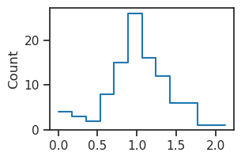
dz_dr_all[0.5].mean()
tensor(1.0104, dtype=torch.float64, grad_fn=<MeanBackward0>)
print(dz_dr_np)
tensor([2.2377, 0.7221, 1.3924, 1.0421, 3.8542, 2.5781, 0.9173, 1.0569, 0.1628, 3.4658, 0.3126, 1.0930, 2.0698, 2.0899, 1.6007, 1.1405, 1.0662, 0.9232, 0.9095, 0.5675, 1.8489, 1.8694, 1.1369, 1.5367, 2.0670, 1.3610, 0.8731, 1.8879, 1.4021, 0.8126, 1.4259, 0.7895, 1.5156, 1.5797, 0.8429, 1.1421, 1.3169, 1.3766, 0.9821, 1.8769, 1.3522, 1.0582, 1.4111, 0.8201, 1.4575, 1.8411, 1.6200, 1.2503, 1.5741, 1.4526, 1.3570, 1.6084, 1.2991, 1.4267, 0.8862, 1.4322, 1.2716, 0.9015, 1.4293, 0.9720, 1.3432, 1.3777, 1.3831, 1.3728, 1.5571, 1.4571, 1.8316, 1.3735, 1.3450, 1.3144, 0.9960, 1.3617, 1.3391, 1.3023, 1.0688, 1.2274, 1.1519, 1.2048, 1.2271, 1.1219, 1.1469, 1.2055, 1.1647, 1.0279, 1.0603, 0.9363, 0.8748, 0.7997, 0.8274, 0.7202, 0.7628, 0.6573, 0.6554, 0.6054, 0.5042, 0.5536, 0.5034, 0.4386, 0.3844, 0.3162], dtype=torch.float64)
histplot(dz_dr)
<Axes: ylabel='Count'>
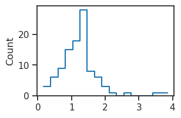
p.rate = p.rate.detach().requires_grad_()
i = 0
torch.autograd.grad(z[i].sum(), p.rate, create_graph=True)[0]
tensor([1.1158, 0.0000, 0.0000], grad_fn=<ViewBackward0>)
Trainer#
model_type = 'poisson'
cfg_vae, cfg_tr = default_configs('vH16', model_type, 'grad|lin')
cfg_vae['seq_len'] = 8
cfg_vae['n_iters'] = 1
cfg_vae['track_stats'] = True
# set betas
cfg_vae['beta_inner'] = 8.0
cfg_tr['kl_beta'] = 8.0
print(f"VAE:\n{cfg_vae}\n\nTrainer:\n{cfg_tr}")
VAE: {'dataset': 'vH16', 'n_latents': 512, 'clamp_prior': -4, 'clamp_du': 10.0, 'clamp_u': 8.0, 'inf_type': 'grad', 'dec_type': 'lin', 'init_dist': 'normal', 'init_scale': 0.0001, 'seq_len': 8, 'n_iters': 1, 'track_stats': True, 'beta_inner': 8.0} Trainer: {'batch_size': 200, 'epochs': 300, 'optimizer_kws': {'weight_decay': 0.0}, 'grad_clip': 200, 'kl_beta': 8.0}
mod = MODEL_CLASSES[model_type](CFG_CLASSES[model_type](**cfg_vae))
# mod.layer.log_scale.requires_grad = False
# mod.layer.log_bias.requires_grad = False
mod.layer.log_lr.requires_grad = False
mod.layer.v_init.requires_grad = False
tr = Trainer(mod, ConfigTrain(**cfg_tr), device=device)
mod.print()
print(f"{mod.cfg.name()}\n{tr.cfg.name()}_({mod.timestamp})\n")
tr.show_schedules()
+-------------+------------+ | Module Name | Num Params | +-------------+------------+ | IPVAE | 131.8 K | | ——— | ——— | | layer | 131.8 K | +-------------+------------+
poisson_vH16_t-8×1_b-8_z-[512]_<grad|lin> b200-ep300-lr(0.002)_beta(8:0x0.1)_temp(0.05:lin-0.5)_gr(200)_(2025_02_08,15:11)
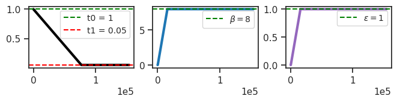
feeder = tr.get_feeder()
tr.model.reset_state(len(feeder.x))
tr.model.layer.initialize_inference()
posterior = tr.model.layer.get_dist()
posterior.rate
tensor([[0.0089, 0.0043, 0.0027, ..., 0.0169, 0.0083, 0.0069],
[0.0089, 0.0043, 0.0027, ..., 0.0169, 0.0083, 0.0069],
[0.0089, 0.0043, 0.0027, ..., 0.0169, 0.0083, 0.0069],
...,
[0.0089, 0.0043, 0.0027, ..., 0.0169, 0.0083, 0.0069],
[0.0089, 0.0043, 0.0027, ..., 0.0169, 0.0083, 0.0069],
[0.0089, 0.0043, 0.0027, ..., 0.0169, 0.0083, 0.0069]],
device='cuda:1', grad_fn=<AddBackward0>)
z = posterior.rsample()
dz_dr = torch.autograd.grad(z.sum(), posterior.rate, create_graph=True)[0]
dz_dr.shape
torch.Size([200, 512])
aaa = tonp(dz_dr)
histplot(aaa.ravel(), bins=np.linspace(0, 10, 11) - 0.5)
<Axes: ylabel='Count'>
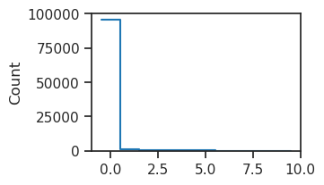
np.round(aaa, 2)
array([[ 0. , 0. , 0. , ..., 0. , 0. , 0. ],
[ 0. , 0. , 0. , ..., 0. , 0. , 53.81],
[ 0. , 0. , 0. , ..., 32.45, 0. , 0. ],
...,
[ 0. , 0. , 0. , ..., 0. , 0. , 0. ],
[ 0. , 0. , 0. , ..., 0. , 0. , 0. ],
[ 0. , 0. , 0. , ..., 14.28, 0. , 0. ]], dtype=float32)
cm = 'langevin+log_bias-log_lr'
tr.train(fit_name=f"{cm}_{tr.cfg.name()}")
epoch # 300, avg loss: 338.008919: 100%|████| 300/300 [1:42:58<00:00, 20.60s/it]
tr.model.show();
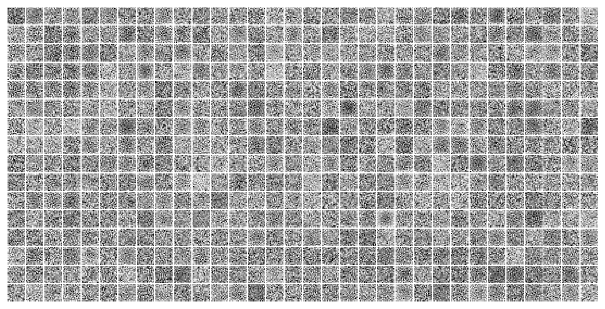
data, loss, etc = tr.validate()
u = tonp(tr.model.layer.u)
v = tonp(tr.model.layer.v)
u.shape, v.shape
((11, 512), (11, 512))
histplot(u.ravel());
histplot(v.ravel());
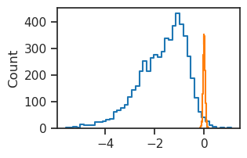
bias = tonp(tr.model.layer.bias.squeeze())
log_gain = tonp(tr.model.layer.log_gain.squeeze())
log_scale = tonp(tr.model.layer.log_scale.squeeze())
histplot(bias);
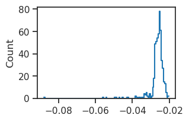
histplot(log_gain);
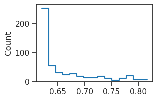
histplot(np.exp(log_gain))
<Axes: ylabel='Count'>
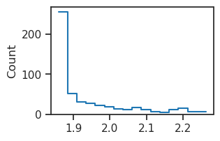
histplot(log_scale);
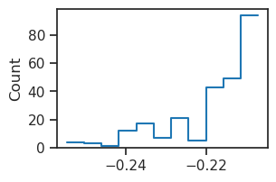
feeder = tr.get_feeder(next(iter(tr.dl_trn))[0])
output = tr.model(feeder, return_extras=True)
print(output)
Keys: ['loss_kl', 'loss_recon', 'posterior', 'u', 'v', 'a', 'recon', 'samples', 'conditional']
output = output.stack()
list(output)
['loss_kl',
'loss_recon',
'posterior',
'u',
'v',
'a',
'recon',
'samples',
'conditional']
data, loss, etc = tr.validate()
list(etc)
['u', 'v', 'a']
etc['a'].shape
(25811, 8, 512)
print(tr.model)
IPVAE( (layer): PoissonLayer(input_dim=256,latent_dim=512, temp=1, beta=1) )
print(tr.model.layer)
PoissonLayer(input_dim=256,latent_dim=512, temp=1, beta=1)
print_num_params(tr.model.layer)
+--------------+------------+ | Module Name | Num Params | +--------------+------------+ | PoissonLayer | 133.4 K | | ——— | ——— | | phi | 131.1 K | +--------------+------------+
x, *_ = next(iter(tr.dl_trn))
feeder = tr.get_feeder(x)
output = tr.model(feeder, return_extras=True)
output = output.stack()
list(output)
['loss_kl',
'loss_recon',
'posterior',
'u',
'v',
'a',
'recon',
'samples',
'conditional']
output['samples'].shape
torch.Size([200, 16, 512])
print(output)
Keys: ['loss_kl', 'loss_recon', 'posterior', 'u', 'v', 'a', 'recon', 'samples', 'conditional']
x = feeder[0]
x.shape
torch.Size([200, 256])
_ = plot_weights(x.reshape(tr.model.cfg.shape)[:60, 0], nrows=3)
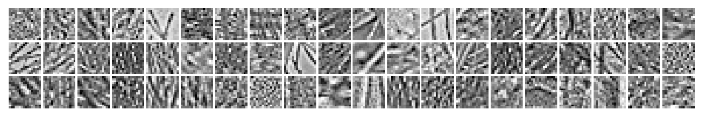
tr.model.reset_state(len(x))
traj_u, traj_v, traj_a = tr.model.layer(x)
tr.model.layer.u
tensor([[-4.7256, -5.4607, -5.9176, ..., -4.0803, -4.7904, -4.9692],
[-4.7259, -5.4586, -5.9182, ..., -4.0788, -4.7875, -4.9709],
[-4.7286, -5.4577, -5.9214, ..., -4.0802, -4.7909, -4.9709],
...,
[-4.7249, -5.4586, -5.9172, ..., -4.0760, -4.7914, -4.9698],
[-4.7271, -5.4576, -5.9193, ..., -4.0824, -4.7940, -4.9723],
[-4.7261, -5.4574, -5.9174, ..., -4.0816, -4.7952, -4.9720]],
device='cuda:1', grad_fn=<RsubBackward1>)
tr.model.layer.u_prior
tensor([[-4.7261, -5.4604, -5.9181, ..., -4.0787, -4.7923, -4.9697],
[-4.7261, -5.4604, -5.9181, ..., -4.0787, -4.7923, -4.9697],
[-4.7261, -5.4604, -5.9181, ..., -4.0787, -4.7923, -4.9697],
...,
[-4.7261, -5.4604, -5.9181, ..., -4.0787, -4.7923, -4.9697],
[-4.7261, -5.4604, -5.9181, ..., -4.0787, -4.7923, -4.9697],
[-4.7261, -5.4604, -5.9181, ..., -4.0787, -4.7923, -4.9697]],
device='cuda:1', grad_fn=<ExpandBackward0>)